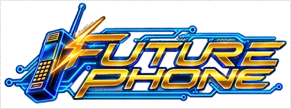

Future Phone
« More buttons, more future. »The owner's motto · Dennis et Sylvia Kester
- OwnerDennis et Sylvia Kester
- Since1982
- Address248 Front Street, Downtown
From the 3e Avenue works, reach Front Street and the green-screen window. - Opening hoursMon–Sat 10am–8pm; new models Tuesday, explanations until the salesperson runs out.
Its story
Dennis and Sylvia opened in 1982 with twelve devices and two sockets. She tests batteries; he presents every button as a reason to replace a telephone.
In 1985, a green-screen model arrived on Monday, followed by a newer model Tuesday. Sylvia kept both manuals to prove the exact duration of their technological lead.
Anecdotes
- In August 1984, customer Ellis Ward brought a suitcase for a phone advertised as “lighter”.
- In December 1985, a Melvin cassette measured beeps; Sylvia wrote three decimal places on the demonstration sheet.
- In June 1986, Dolores Van Pelt inaugurated the $99 display; Dennis then itemised battery, charger and handset.
The ad
Played completely straight, on NEON 103.5 FM.
(voix techno)Listen to NEON 103.5 FM →
VOTRE TÉLÉPHONE EST VIEUX !
TRÈS VIEUX !
Il possède encore une antenne !
FUTURE PHONE, DOWNTOWN !
Plus petits !
Plus légers !
Plus de boutons !
Et certains ont même des fonctions que personne ne comprend encore !
Celui avec l'écran vert est officiellement le plus moderne de Vice Bay.
(pause)
Enfin…
Jusqu'à mardi.
Cette semaine : 99 dollars.
(pause)
Plus la batterie.
(pause)
Plus le chargeur.
(pause)
Plus le téléphone.
(se reprend)
Oui.
Future Phone.
La technologie avance.
Votre portefeuille essaie de suivre.
---
# VOLT 107.3
## VOLT 107.3
Good to know
- The $99 price refers to the basic offer itemised at the counter.
- Sylvia sticks “until Tuesday” behind the “most modern” label.
The neighbour
Golden PawnGolden Pawn is two windows away; Sylvia sends old models with a list of required cables.